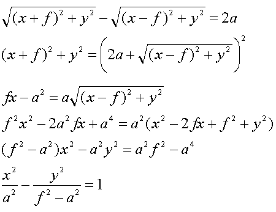
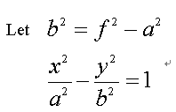

1.The difference of distance from two foci is constant. (PF' - PF = AA')
2.We define the coordinates as F(f, 0), F'(-f, 0), A(a, 0), A'(-a, 0) and P(x, y). The equation of hyperbola is ........
Since PF' - PF = AA'  